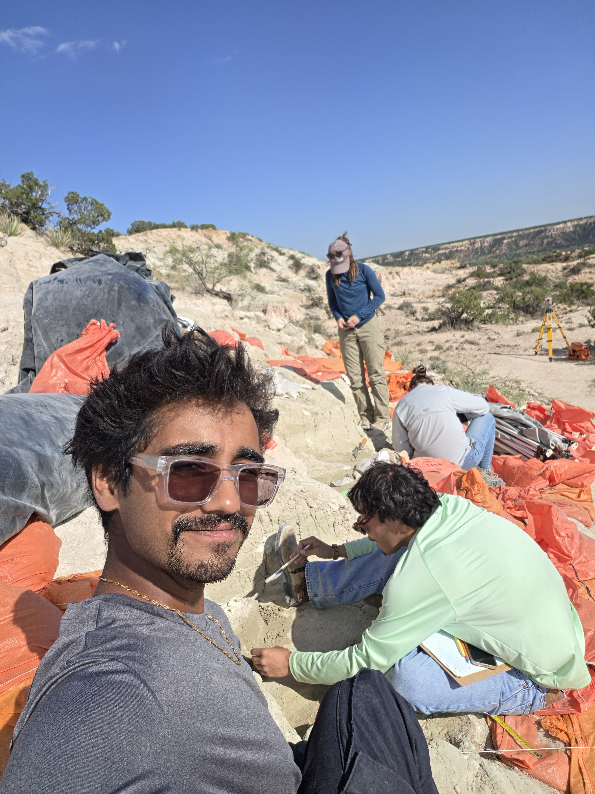

01
Field Research
Quaternary/Pleistocene fossil excavation, archaeological survey, stratigraphic documentation, surveying, laboratory processing, and fossil preparation.
See field experience →GEOLOGY • PALEONTOLOGY • SCIENCE COMMUNICATION
Building a career in paleontology through field research, geology, and science communication.
CURRENTLY
I'm a geology student transitioning into paleontology, with a background in film and emerging media production and hands-on field and laboratory experience.
In 2026, I completed a 12-week field research program with the Museum of Texas Tech University at Lubbock Lake Landmark. I'm now continuing my geology education at Los Angeles Pierce College while building experience across paleontology, museum work, field research, and science communication.
Quaternary/Pleistocene fossil excavation, archaeological survey, stratigraphic documentation, surveying, laboratory processing, and fossil preparation.
See field experience →Exploring vertebrate paleontology, paleobiology, paleoecology, taphonomy, evolutionary paleontology, and geobiology.
Explore interests →Combining professional media production, photography, and storytelling with a growing focus on communicating paleontology to broad audiences.
See media work →
REPLACE WITH FIELD PHOTOFIELD EXPERIENCE
At Lubbock Lake Landmark, I worked across field and laboratory settings, documenting specimens and excavation units, operating GNSS and total-station equipment, processing matrix, preparing jackets, and maintaining context throughout the process.
View the full field record